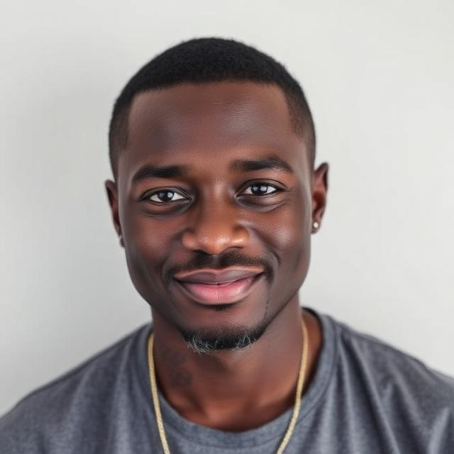

Breaking the digital divide, one student at a time in South African education.
Learn more about our mission and impact in breaking the digital divide in South African education.
ConnectEd Futures was founded in 2020 in response to the digital divide exacerbated by the COVID-19 pandemic. A group of educators and tech professionals came together with a shared vision: to ensure that no student is left behind due to a lack of access to technology.
What started as a small community initiative has grown into a recognised non-profit organisation, partnering with over 30 schools and 50 corporate donors across South Africa.
Today, we continue to work tirelessly to provide refurbished laptops and internet access to underprivileged high school students, empowering them to achieve their academic and professional dreams.

To empower the next generation by equipping them with the technology and tools necessary for success in academics and success.
A South Africa where every student, regardless of their background, has equal access to the opportunities of the digital world.

Co-founder, Executive Director
An educator with over 15 years of experience in South African public school system. He leads our operations and ensures our mission is fulfilled.

Co-founder, Technology Director
Sarah is a software engineer who manages the refurbishment and distribution of all technological devices providing them to our beneficiaries.

Operations Manager
Thabo oversees our-day-to-day operations, including school partnerships, volunteer coordination, and logistics.

Fundraising Manager
Nomzamo is responsible for securing funding and managing our relationships with corporate donors and provides beneficiaries with the necessary resources to succeed in their academic and professional settings.
We are proud to collaborate with a diverse range of partners who share our commitment to breaking the digital divide in South African.